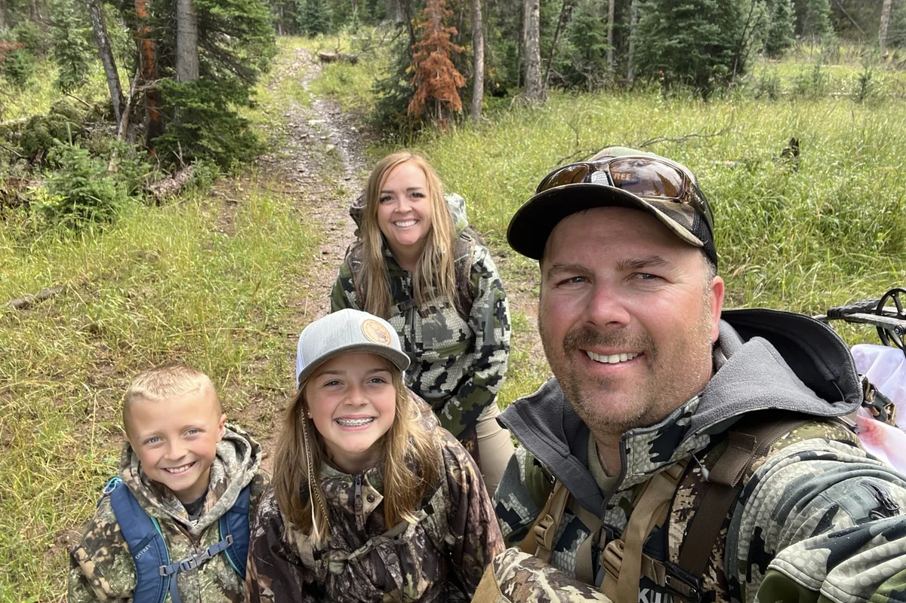

Why we do it
A practical outdoor resource built around western hunting, fishing, camping, gear, and time spent learning outside.
Backcountry Pursuit exists to make outdoor information more useful. No endless gear hype. No pretending every trip is perfect. The goal is straightforward: share tactics that work, explain gear clearly, and help people spend more capable time outdoors.
Expect elk and deer tactics, bowhunting and rifle content, fishing guides, camp systems, survival fundamentals, and honest buying guides.

The Pursuit
Backcountry Pursuit is grounded in real hunts, river days, family trips, pack-outs, camp stories, and lessons learned the hard way. The goal is useful outdoor information without pretending every trip is perfect.
The photos throughout the site come from real days in the field and on the water.
What We Stand For
Tactics and gear should make sense on the mountain, at the river, and around camp.
The best outdoor knowledge is worth teaching to kids, friends, and the next hunting partner.
Gear should be recommended because it solves a problem—not because it has the loudest marketing.